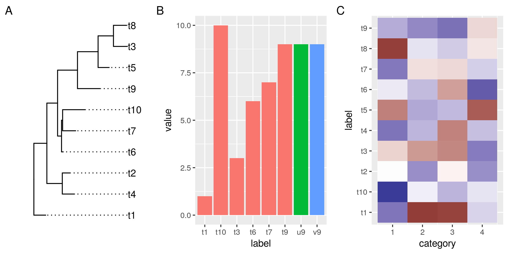
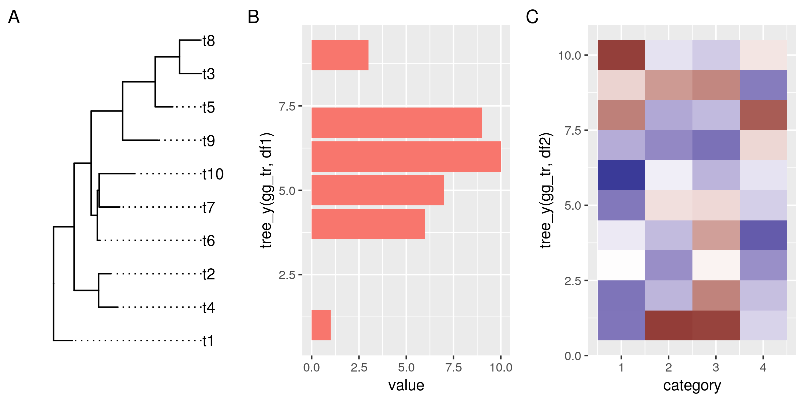
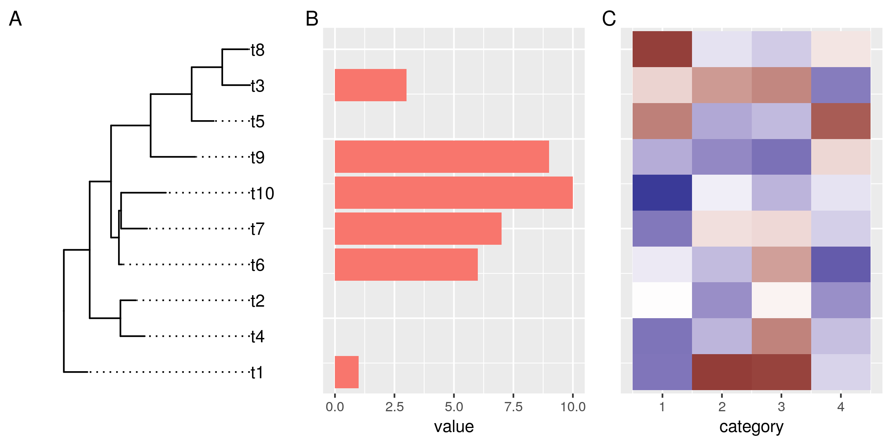

Plotting a ggtree and ggplots side by side
Plotting phylogenies and associated data side by side is a good way to explore evolutionary patterns in your data. In this post I will describe my approach for creating such plots in R using ggplot, ggtree, and patchwork.
ggtree itself comes with a few methods (gheatmap, msaplot, facet_plot) to
display additional data next to the trees. Those methods, however, always
combine the data and the tree within the same plot area. This considerably
limits customizability. I, therefore, decided to go down a different route, and
combine multiple individual plots in order to retain a high degree of
customizability.
Let's start with a simple example. We need a dummy tree, and two dummy data sets that we want to plot. Both, tree and data use the same labels to refer to the different organisms.
library(tidyverse) library(ggtree) library(patchwork) # a tree set.seed(1338) tr <- rtree(10) # and some dummy data df1 <- tibble( # only some labels match label = c(tr$tip.label[sample(6, 6)], "u9", "v9"), value = label %>% str_sub(2) %>% as.numeric) df2 <- tibble( label = rep(tr$tip.label, 4), category = rep(1:4, each=10), value = rnorm(40, 0, 3)) no_legend <- function() theme(legend.position="none") # plot the tree, gg_tr <- ggtree(tr) + geom_tiplab(align=TRUE) + scale_x_continuous(expand=expand_scale(0.2)) # make more room for the labels # the data points, the histogram and the heatmap gg_hist <- ggplot(df1, aes(label, value)) + geom_col(aes(fill=substr(label, 1, 1))) + no_legend() gg_heat <- ggplot(df2, aes(category, label)) + geom_tile(aes(fill=value)) + scale_fill_gradient2() + no_legend() gg_tr + gg_hist + gg_heat + plot_annotation(tag_levels="A") ggsave("img/ggtree-composite-1.png", type='cairo', width=8, height=4)

So far so good. Now we want to reorder the data in the plots so it aligns with the leaves in our tree.
Under the hood, ggtrees are laid out on a numeric coordinate system. By default, the leaves match whole numbers, from 1 to the number of leaves. The easiest way to align data in other plots to the tree is to match the y-coordinates using common labels. So let's start with that.
tree_y() is a little helper function that takes a ggtree and a data frame with
a label column. The function matches the ggtree and the data frame by the
label column and returns the new y-coordinates for the data. We will use this
function to transform the labels in our data on-the-fly in the ggplot aesthetics
argument.
tree_y <- function(ggtree, data){ if(!inherits(ggtree, "ggtree")) stop("not a ggtree object") left_join(select(data, label), select(ggtree$data, label, y)) %>% pull(y) } # replot histogram and heatmap, match the y-coords to the tree gg_hist <- ggplot(df1, aes(tree_y(gg_tr, df1), value)) + geom_col(aes(fill=substr(label, 1, 1))) + no_legend() + coord_flip() # flip this plot gg_heat <- ggplot(df2, aes(category, y=tree_y(gg_tr, df2))) + geom_tile(aes(fill=value)) + scale_fill_gradient2() + no_legend() gg_tr + gg_hist + gg_heat + plot_annotation(tag_levels="A") ggsave("img/ggtree-composite-2.png", type='cairo', width=8, height=4)

OK, this doesn't look bad at all. The data in all plots is now reordered and matches the order of the tree leaves. However, it doesn't align properly yet. That has two reasons:
First, the plotted data have different y-limits: our first data set is missing data for the top tree leaf (t8), and in the heat map the tiles are centered around the leaf y-coordinates, and actually extend outwards by 0.5 units.
Second, the different plots also have different amounts of expansion space around their outer data points. This is a ggplot feature, and explained under the expand argument of the continuous scales: "The defaults are to expand the scale by 5% on each side for continuous variables, and by 0.6 units on each side for discrete variables".
To address those two related issues, we need a way to control the y-limits and the expansion space around it for the tree and the plots. For the tree, it's quite simple. All we need to do is settle on a fixed expansion space that gives enough room for leaf-centered objects such as tiles and bars in aligned plots. We don't have to do anything about the y-limits of the tree, because those are our reference.
scale_y_tree() is a simple wrapper around scale_y_continuous(), that when
applied to the ggtree plot, resets the expansion space around the tree limits to
0.6 units on each side of the leaves.
For the plots, it's a bit more involved, because we want to derive the y-limits
from the tree, rather than data. The way I made it work is by writing the
wrapper function ggtreeplot(). The function basically behaves like ggplot(),
but take a ggtree as an additional argument. It uses the ggtree to a) match the
y-coordinates of the data by common labels (just as we did on-the-fly for the
previous plots), and b) it computes new y-limits from the tree and adds those
and our predefined expansion space of 0.6 to the plot.
The flip parameter is necessary when x and y in the plot will be
flipped. Because in that case, we need to set our limits internally on the
x-axis, which will later become the y-axis.
# overwrite the default expand for continuous scales scale_y_tree <- function(expand=expand_scale(0, 0.6), ...){ scale_y_continuous(expand=expand, ...) } # get the range of the ggtree y-axis data tree_ylim <- function(ggtree){ if(!inherits(ggtree, "ggtree")) stop("not a ggtree object") range(ggtree$data$y) } # plot data next to a ggtree aligned by shared labels ggtreeplot <- function(ggtree, data = NULL, mapping = aes(), flip=FALSE, expand_limits=expand_scale(0,.6), ...){ if(!inherits(ggtree, "ggtree")) stop("not a ggtree object") # match the tree limits limits <- tree_ylim(ggtree) limits[1] <- limits[1] + (limits[1] * expand_limits[1]) - expand_limits[2] limits[2] <- limits[2] + (limits[2] * expand_limits[3]) + expand_limits[4] if(flip){ mapping <- modifyList(aes_(x=~x), mapping) data <- mutate(data, x=tree_y(ggtree, data)) gg <- ggplot(data=data, mapping = mapping, ...) + scale_x_continuous(limits=limits, expand=c(0,0)) }else{ mapping <- modifyList(aes_(y=~y), mapping) data <- mutate(data, y=tree_y(ggtree, data)) gg <- ggplot(data=data, mapping = mapping, ...) + scale_y_continuous(limits=limits, expand=c(0,0)) } gg } # get rid of superfluous axis - this works after coord_flip, so it also works # for the rotated histogram no_y_axis <- function () theme(axis.line.y = element_blank(), axis.title.y = element_blank(), axis.text.y = element_blank(), axis.ticks.y = element_blank())
Now we can plot our tree and the data side by side using our new functions. We
plot the tree as before but add the fixed y scale. For the data, we replace the
ggplot() call with the ggtreeplot() call. Setting the y-aesthetic (or x in
case of flipped plots) is no longer necessary. ggplotree() assumes that it
should point to the coordinates we got from matching the labels from the data to
the tree.
gg_tr <- ggtree(tr) + geom_tiplab(align=TRUE) + scale_x_continuous(expand=expand_scale(0.2)) + # make more room for the labels scale_y_tree() gg_hist <- ggtreeplot(gg_tr, df1, aes(y=value), flip=TRUE) + geom_col(aes(fill=substr(label, 1, 1))) + no_legend() + coord_flip() + no_y_axis() gg_heat <- ggtreeplot(gg_tr, df2, aes(x=category)) + geom_tile(aes(fill=value)) + scale_fill_gradient2() + no_legend() + no_y_axis() gg_tr + gg_hist + gg_heat + plot_annotation(tag_levels="A") ggsave("img/ggtree-composite-3.png", type='cairo', width=8, height=4)

Et voilà! A tree and two beautiful plots, side by side, and perfectly aligned. The grammar for this final plot is pretty much identical to what we used for the initial unaligned ggtree/ggplots. This makes it very easy to go from a set of generic plots to this composite plot. At the same time, we retain the level modularity and customizability that we had with the original ggplots. This, in my opinion, is what makes this approach powerful.